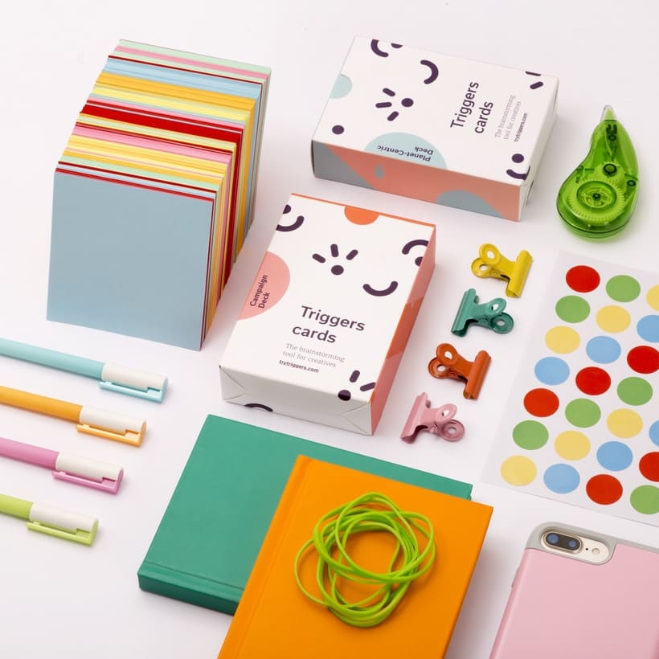
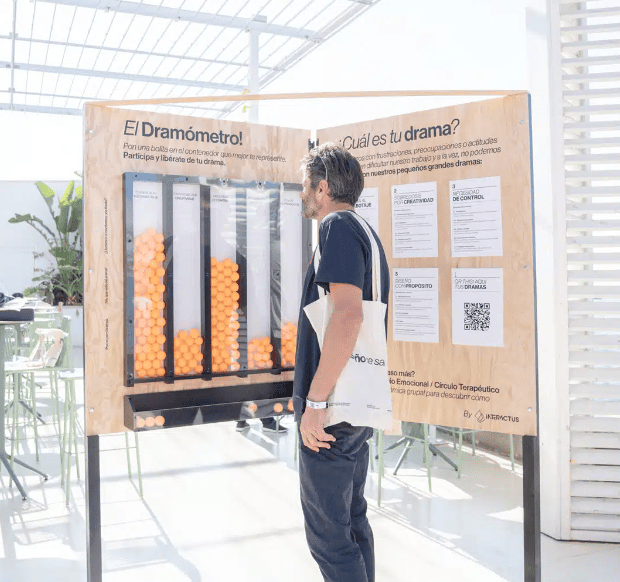
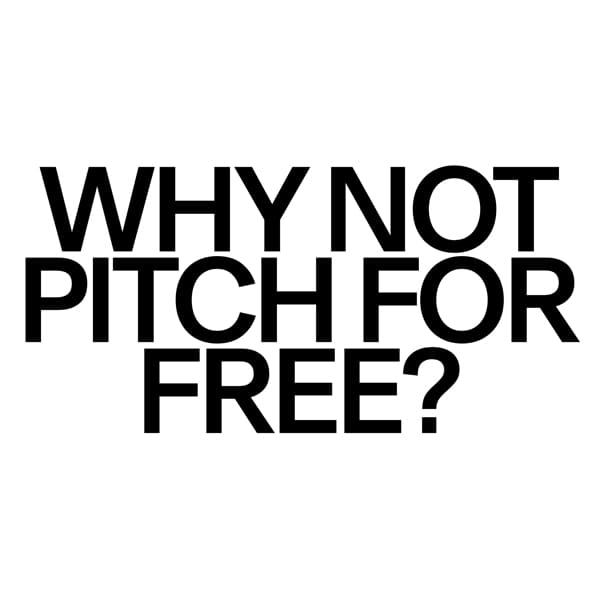
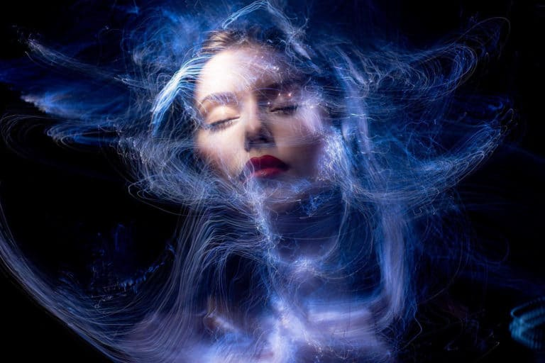
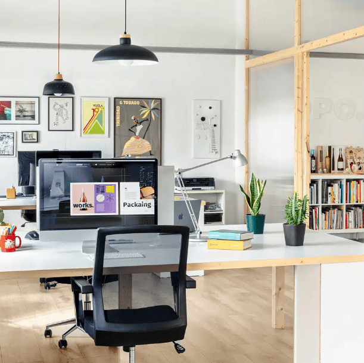

IMPERDIBLE
Diseñar sin usar referencias
No importa el número de veces que pase, me sigue llamando poderosamente la atención la facilidad con la que en el mundo del diseño se recurre a la referencia. Empezar a hablar de un proyecto con un equipo de diseño y raro es que alguno de sus integrantes no esté ya abriendo el Pinterest, Behance, Instagram.
Ver más

IMPERDIBLE
El drama de ser creativa
En la última edición del festival Blanc!, los dramas cotidianos de quienes trabajan en diseño y creatividad tomaron el centro del escenario. Inspirados en los retos y vulnerabilidades del proceso creativo, se presentó una innovadora actividad: el Dramómetro.
Ver más

IMPERDIBLE
Contra el trabajo no remunerado
La iniciativa «No Free Pitches» fue lanzada por la agencia de diseño Porto Rocha en respuesta a la creciente demanda de trabajos no remunerados por parte de potenciales clientes. Esta práctica, conocida como «pitching» gratuito, ha sido común en la industria publicitaria durante décadas.
Ver más

Llegar a la felicidad a través del arte
El mundo de las artes visuales ha servido de vía comunicativa durante gran parte de la historia. Una ventana de expresión para seres humanos con personalidades opuestas, pero con el objetivo común de mostrar al resto una idea.
Ver más

El espacio ideal existe
Crear un espacio de trabajo ideal es fundamental para fomentar la productividad, la inspiración y el confort. Estos espacios deben ser estéticamente agradables, funcionales y capaces de adaptarse.
Ver más